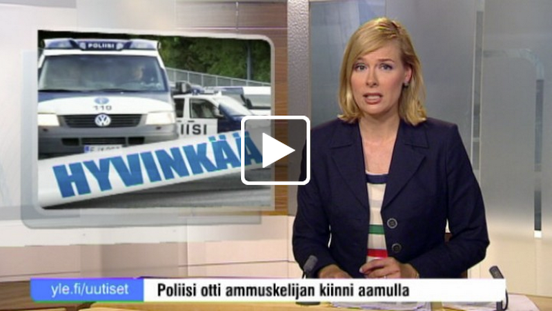
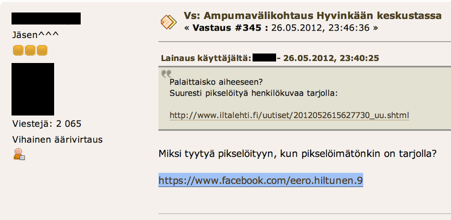
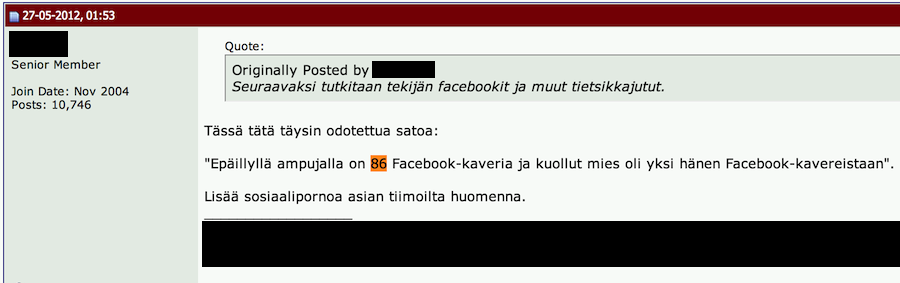
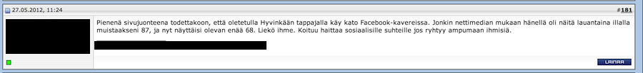
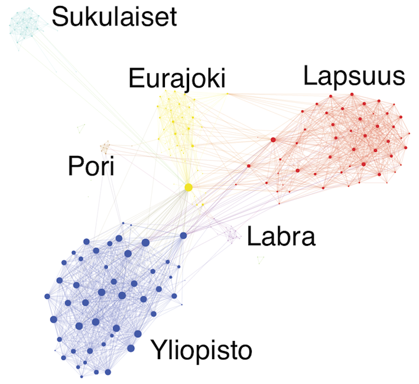

Datajournalismin mahdollisuudet
Teemo Tebest
Teemo Tebest
Teemo Tebest

Teemo Tebest
- Tietotekniikan diplomi-insinööri
- Aikaisemmin tutkijana TTY:llä
- Web-suunnittelija, Svenska Yle
- Datajournalisti, Yleisradio
Aloitin Yle:ssä joulukuussa 2011
Agenda lyhyesti
- Hyvinkään ampumistapaus ja miten analysoin epäillyn Facebook-verkoston
- Tiedonhankinta verkossa
- Analysointityökalut ja niiden käyttäminen
Mitä tapahtui

Aikajana
Eero Hiltunen aloitti ammuskelun Hyvinkäällä klo 1.53 Aamulla etsin Facebook-profiilin, tein analyysin ja kirjoitin blogin Facebook-profiili menettää tietoja katoaa lopulta Annan Yle uutisille haastattelun koskien analyysia Myös Svenska Yle julkaisi oman juttunsa aiheesta
Aikajana
Eero Hiltunen aloitti ammuskelun Hyvinkäällä klo 1.53 Aamulla etsin Facebook-profiilin, tein analyysin ja kirjoitin blogin Facebook-profiili menettää tietoja katoaa lopulta Annan Yle uutisille haastattelun koskien analyysia Myös Svenska Yle julkaisi oman juttunsa aiheesta
Blogin pointit
- Tapahtuman puinti aktiivista
- Netin rooli tiedon hankinnassa
- Hypoteesi ääriajatusten vaikutuksesta tapahtumiin
- Tulosten tiivis analyysi
Taustatiedoksi
Kevään aikana olin harrastuksen vuoksi tehnyt some-analyysiä niin Twitteristä kuin Facebookista saatavalle datalle
→ Työkalut olivat siis jo olemassa
• Verkostossa 64 kaveria
• Punaiset pallot naisia (11 %), siniset miehiä (89 %)
• Viivat kuvaavat heidän välisiä kaverisuhteita Facebook:ssa
• Kuusi ihmistä jotka eivät muiden kanssa kavereita
• Punaiset pallot naisia (11 %), siniset miehiä (89 %)
• Viivat kuvaavat heidän välisiä kaverisuhteita Facebook:ssa
• Kuusi ihmistä jotka eivät muiden kanssa kavereita
Datan hankinta
Nettikansa tietää
• Murha.info
• Jatkoaika.com
• Hommaforum.org
• F1-forum.fi



Datan visualisointi
- Datan visualisointi verkostoksi, missä työkaluna avoin ja ilmainen ohjelma nimeltä Gephi
- Ihmisten asetteleminen niin, että oli mahdollista tulkita miten he ovat keskenään kavereita
Aikajana
Eero Hiltunen aloitti ammuskelun Hyvinkäällä klo 1.53 Aamulla etsin Facebook-profiilin, tein analyysin ja kirjoitin blogin Facebook-profiili menettää tietoja katoaa lopulta Annan Yle uutisille haastattelun koskien analyysia Myös Svenska Yle julkaisi oman juttunsa aiheesta
Päähavainnot
- Vain osa kavereista jäljellä
- Hyvin tiivis verkosto, jossa ei viitteitä ääriryhmittymiin
- Käsittelee asiaa vain yhdestä näkökulmasta
• Verkostossa 64 kaveria
• Punaiset pallot naisia (11 %), siniset miehiä (89 %)
• Viivat kuvaavat heidän välisiä kaverisuhteita Facebook:ssa
• Kuusi ihmistä jotka eivät muiden kanssa kaveri
• Punaiset pallot naisia (11 %), siniset miehiä (89 %)
• Viivat kuvaavat heidän välisiä kaverisuhteita Facebook:ssa
• Kuusi ihmistä jotka eivät muiden kanssa kaveri
Oma verkostoni
Käytäntö
- Hands on!
Miten verkostoanalyysi syntyy kädenkäänteessä
PerusS ja Islamofobia
Silminnäkijä ja Spotlight tekivät useamman ohjelman juttusarjan FDL:n toiminnasta Suomessa. Spotlight keskittyi etenkin Perussuomalaisten kytköksiin FDL:ssä.
Mitä tehtiin?
Ensinnäkin:
Marko Hietikko oli kerännyt listan kiinnostavista PS:n poliitikkojen ja pääasiallisten FDL-vaikuttajien Facebook-profiileista.
Tietokone avuksi
Toiseksi:
Marko tiedusteli minulta josko olisi mahdollista tutkia miten nämä ihmiset ovat vaikuttaneet keskenään Facebookissa.
Lopputulos
Kolmanneksi:
Facebook:sta oli mahdollista kysyä miten listan henkilöt ovat keskenään kavereita Facebook:ssa.
→ Hyvin tiivis verkosto ihmisistä.

Mikä hyöty?
Tuloksia voitiin käyttää apuna argumentoinneissa ja haastatteluissa.
Yksityiskohdat olivat lähinnä toimittajan työkalu, mutta analyysiä voitiin käyttää taustakuvituksena myös itse jutussa.
TV:ssä grafiikkana
Ehdottomasti tämänkaltaiset verkostoanalyysit ovat melko vaikeita yksityiskohtaisesti läpikäytäviksi televisiojulkaisuna, mutta niillä voitiin antaa merkitystä ja taustaa sille miten journalistinen työ oli tehty.
Lyhyesti:
Twitterin rooli
Twitterin rooli tiedonhankinnassa etenkin ulkomaisissa kriiseissä on kasvanut. Mm. Syyrian kidnappaustilannetta seurataan Yle:ssä Twitterin avulla.
Esimerkki tiedonhankinnasta
Esimerkiksi tieto eilisestä MEPin pyörtymisestä oli saatavilla ensimmäisenä Twitteristä kanssa MEPpien twiittaamana.
Kiitos!
Kysymyksiä?